Ignore the pretty stills. Watch the feet / paws. A town walk is a small swap: one foot forward, then the other. Same clothes and face in all four. Too still = photocopies. Too much = spinning, jumping, or turning to face you.
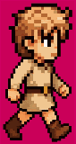
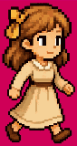
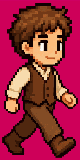
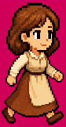
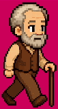
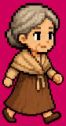
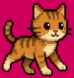
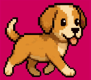
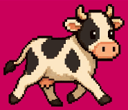
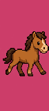
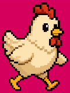